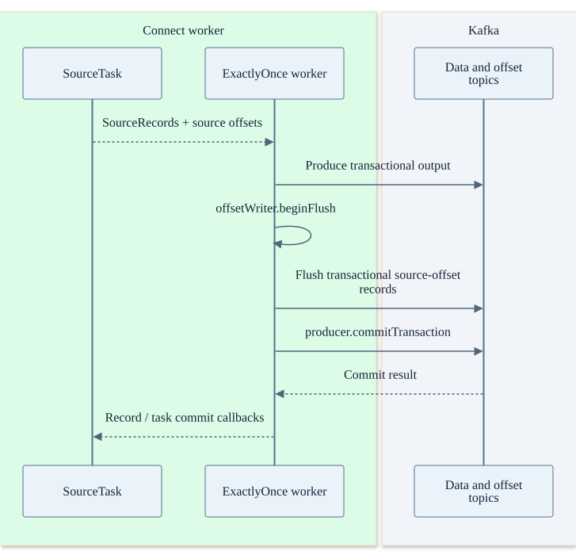
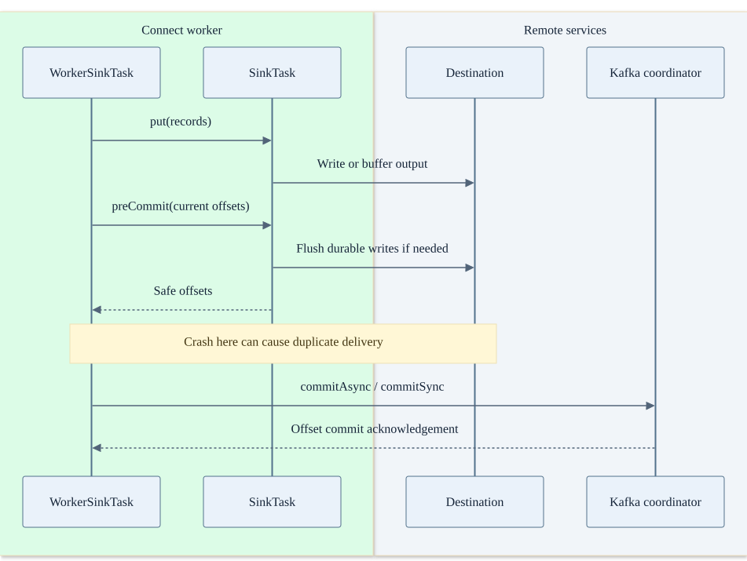

Chapter 04 · source-backed walkthrough
Kafka Connect: workers and source / sink commits
Connect distributes connector tasks across worker processes. Its source and sink paths have different progress protocols. The inspected checkout includes a dedicated exactly-once source worker; sink exactly-once effects still depend on the connector and destination.
01
Distributed workers and internal topics
Each worker runs a Herder for orchestration and task runners for connectors. The Connect group protocol assigns connector and task ownership. REST management requests may be forwarded to the responsible worker; record traffic normally goes between tasks and their source, Kafka, or sink directly.
config.storage.topic stores connector and task configuration. offset.storage.topic stores source-system positions. status.storage.topic stores status observations. Sink tasks use consumer-group offsets for Kafka input progress. The source-offset topic and __consumer_offsets are not interchangeable.
Management and record paths
Workers coordinate through Kafka membership and backing topics. External records do not flow through the REST endpoint.

02
Ordinary source versus exactly-once source
A source task returns SourceRecord values with source partition and source offset metadata. The ordinary path converts / transforms them, sends them to Kafka and later persists source positions. A crash after publication but before durable source offset advancement can replay output.
ExactlyOnceWorkerSourceTask uses a transactional producer. At a transaction boundary it flushes source offsets through the offset writer and commits the producer transaction. Output records and source-offset records are then covered by the same Kafka transaction. This uses source offsets stored as records, not the Streams consumed-group-offset API.
The external source still must be replayable and the connector must support the required semantics. Poll-, interval-, or connector-defined boundaries change grouping and visibility latency. Correct source identity, worker configuration and stale-task fencing are part of the full contract.
Connect exactly-once source commit
The external source is read, not transactionally mutated by this protocol. Source-offset records and Kafka output share the transactional producer.

03
Sink commit and retry window
WorkerSinkTask polls Kafka, applies conversion / transformations and invokes SinkTask.put. put may buffer records rather than making them durable immediately. preCommit is the connector contract for returning positions safe to commit; its implementation must account for any outstanding writes.
The worker commits returned offsets through its KafkaConsumer. It has no generic atomic transaction joining an arbitrary database to __consumer_offsets. A connector can use destination transactions, upsert keys, or destination-held offsets to achieve a stronger external result. That must be checked in that connector, not inferred from Connect status.
A retriable put error pauses delivery for the buffered batch and later retries it. An unrecoverable task failure can leave the task failed until restart; do not assume every connector exception automatically creates a healthy replacement. Worker loss and rebalance are separate ownership events.
A sink side effect can precede offset commit
A process crash in the highlighted gap permits replay. A destination idempotency key can make it harmless.

| Choice | Benefit | Cost or failure consideration |
|---|---|---|
| Larger task batches | Amortize destination I/O and conversion | More buffered memory, larger retry unit and higher visibility latency. |
| More tasks | Parallelize source or destination work | Limited by source partitionability, Kafka partitions and destination limits. |
| Dead-letter / error tolerance | Keep selected bad records from stopping ingestion | Changes business completeness; an offset can advance while an event is diverted. |
| Idempotent destination key | Safe retry after ambiguous write / offset gaps | Requires a stable key and correct destination transaction / uniqueness behavior. |
Inside the implementation
These excerpts come directly from the code paths used above. Expand a component to move from the system view into its implementation.
connect-group DistributedHerder.java:409
Distributed worker control loop and rebalance work.
Kafka/connect/runtime/src/main/java/org/apache/kafka/connect/runtime/distributed/DistributedHerder.java · d2da6a18f839
408 // public for testing
409 public void tick() {
410 // The main loop does two primary things: 1) drive the group membership protocol, responding to rebalance events
411 // as they occur, and 2) handle external requests targeted at the leader. All the "real" work of the herder is
412 // performed in this thread, which keeps synchronization straightforward at the cost of some operations possibly
413 // blocking up this thread (especially those in callbacks due to rebalance events).
414
415 try {
416 // if we failed to read to end of log before, we need to make sure the issue was resolved before joining group
417 // Joining and immediately leaving for failure to read configs is exceedingly impolite
418 if (!canReadConfigs) {
419 if (readConfigToEnd(workerSyncTimeoutMs)) {
420 canReadConfigs = true;
421 } else {
422 return; // Safe to return and tick immediately because readConfigToEnd will do the backoff for usTest source inspected or located, not executed: WorkerCoordinatorTest.java
connect-sink WorkerSinkTask.java:622
SinkTask.put precedes advancement of current offsets.
Kafka/connect/runtime/src/main/java/org/apache/kafka/connect/runtime/WorkerSinkTask.java · d2da6a18f839
621
622 private void deliverMessages() {
623 // Finally, deliver this batch to the sink
624 try {
625 // Since we reuse the messageBatch buffer, ensure we give the task its own copy
626 log.trace("{} Delivering batch of {} messages to task", this, messageBatch.size());
627 long start = time.milliseconds();
628 task.put(new ArrayList<>(messageBatch));
629 // if errors raised from the operator were swallowed by the task implementation, an
630 // exception needs to be thrown to kill the task indicating the tolerance was exceeded
631 if (workerErrantRecordReporter != null) {
632 workerErrantRecordReporter.maybeThrowAsyncError();
633 }
634 recordBatch(messageBatch.size());
635 sinkTaskMetricsGroup.recordPut(time.milliseconds() - start);Test source inspected or located, not executed: WorkerSinkTaskTest.java
connect-source-eos ExactlyOnceWorkerSourceTask.java:266
Source-offset flush and produced records share a producer transaction.
Kafka/connect/runtime/src/main/java/org/apache/kafka/connect/runtime/ExactlyOnceWorkerSourceTask.java · d2da6a18f839
265
266 private void commitTransaction() {
267 log.debug("{} Committing offsets", this);
268
269 long started = time.milliseconds();
270
271 AtomicReference<Throwable> flushError = new AtomicReference<>();
272 boolean shouldFlush = false;
273 try {
274 // Begin the flush without waiting, as there should not be any concurrent flushes.
275 // This is because commitTransaction is always called on the same thread, and should always block until
276 // the flush is complete, or cancel the flush if an error occurs.
277 shouldFlush = offsetWriter.beginFlush();
278 } catch (Throwable e) {
279 flushError.compareAndSet(null, e);Test source inspected or located, not executed: ExactlyOnceWorkerSourceTaskTest.java · public void testPollBasedCommit
connect-precommit WorkerSinkTask.java:444
External flush / connector progress precedes consumer offset commit.
Kafka/connect/runtime/src/main/java/org/apache/kafka/connect/runtime/WorkerSinkTask.java · d2da6a18f839
443 log.trace("{} Calling task.preCommit with current offsets: {}", this, offsetsToCommit);
444 taskProvidedOffsets = task.preCommit(new HashMap<>(offsetsToCommit));
445 } catch (Throwable t) {
446 if (closing) {
447 log.warn("{} Offset commit failed during close", this);
448 } else {
449 log.error("{} Offset commit failed, rewinding to last committed offsets", this, t);
450 for (Map.Entry<TopicPartition, OffsetAndMetadata> entry : lastCommittedOffsetsForPartitions.entrySet()) {
451 log.debug("{} Rewinding topic partition {} to offset {}", this, entry.getKey(), entry.getValue().offset());
452 consumer.seek(entry.getKey(), entry.getValue().offset());
453 }
454 currentOffsets.putAll(lastCommittedOffsetsForPartitions);
455 }
456 onCommitCompleted(t, commitSeqno, null);
457 return;